CSGO RushB中文网
CSGO RushB中文网
本文将给玩家列出历年所有CSGO大行动地图，设计巧妙且富有艺术感，虽然大部分已经无法在官服玩到（大部分已删除），但玩家可以通过创意工坊订阅下载建服玩。大行动地图主要分人质营救地图和C4拆弹地图两种，不过在后面几个大行动加入了特色地图，比如防守地图Crashsite、Coop通关地图Phoenix Compound以及针对趣味模式设计的Rialto等。
*怀念老地图？赶紧订阅吧！也推荐没接触过大行动的新玩家体验！
在创意工坊页面点击绿色“订阅”按钮后Steam客户端便会自动下载，下载后即可游玩。
若无法访问创意工坊请查看解决方法：
https://www.rushb.net/steamcommunity-100-101-105-118.html
若出现“已断开连接-寻找专用服务器失败”提示，重启Steam客户端即可。
回赠大行动（Payback）
“回赠大行动”活动于2013年4月25日开始，9月2日结束，共推出了7张地图，帮助社区地图制作者筹集了 $180,000 美元。
| 名称（中/英） | 介绍 | 类型 | 创意工坊 | 缩略图 |
| 商业中心
Downtown |
阻塞高价值大厦周围维持地图控制，露天的人质营救区以及紧张的救援。 | 营救 | 订阅下载 | 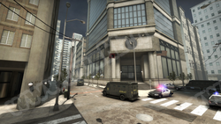 |
| 决战贫民窟
Favela |
危险的死胡同，紧张的较量，还有爆破任务。 | 拆弹 | 订阅下载 | 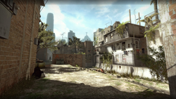 |
| 火拼图书馆
Library |
紧凑的迷宫，提倡策略和诡计。 | 拆弹 | 订阅下载 | |
| 汽车旅馆
Motel |
作战舞台将从狭小的室内作蔓延到广阔的户外。 | 营救 | 订阅下载 | 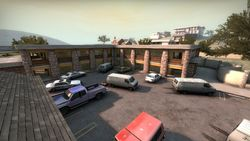 |
| 突击博物馆
Museum |
在现实环境进行快节奏的垂直战斗。 | 营救 | 订阅下载 | 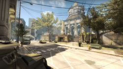 |
| 霹雳行动
Thunder |
CS 1.1大规模休闲人质救援经典地图。 | 营救 | 订阅下载 | 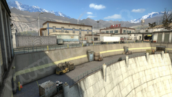 |
| 海滨危机
Seaside |
小图快节奏游戏，入水即死，鼓励采取独特的策略赢得比赛。 | 拆弹 | 订阅下载 | 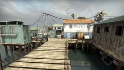 |
英勇大行动（Bravo）
“英勇大行动”活动于2013年9月19日开始，2014年2月5日结束，共有10张地图，其中海滨危机来自回赠大行动，古堡激战和死亡游乐园来自13年12月的冬季攻势。在大行动结束后，古堡激战和死亡游乐园被保留为官服地图至今。
| 名称（中/英） | 介绍 | 类型 | 创意工坊 | 缩略图 |
| 办公大楼
Agency |
多年来，昂德希尔和墨菲公司的办公室—直是招待腰缠万贯的客户、现代艺术和人质危机之家。 | 营救 | 订阅下载 | |
| 阿里镇
Ali |
平衡的包点设计以及紧凑的地中海村庄，适合高度战略。 | 拆弹 | 订阅下载 | 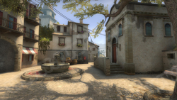 |
| 死城之谜
Cache |
高精度操作和战术实力对于确保切尔诺贝利核心的秘密武器至关重要。 | 拆弹 | 订阅下载 | 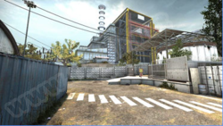 |
| 火拼华埠
ZGtown |
在紧凑的城市环境中进行快速激烈的战斗。 | 拆弹 | 订阅下载 | 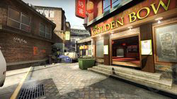 |
| 古堡激战
Cobblestone |
CS经典地图升级，更流畅以及更多战术选择。 | 拆弹 | 订阅下载 | 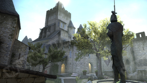 |
| 瓜廖尔堡
Gwalior |
在印度瓜廖尔堡历史遗迹进行疯狂艰苦的战斗。 | 拆弹 | 订阅下载 | 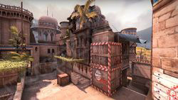 |
| 死亡游乐园
Overpass |
欧洲背景快节奏游戏，作为CT保护立交桥，而T则要摧毁。 | 拆弹 | 订阅下载 | 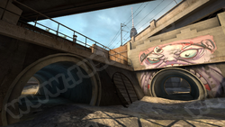 |
| 玛雅遗址
Ruins |
在玛雅神庙中两处包点被危险的视线隔开。 | 拆弹 | 订阅下载 | 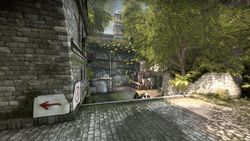 |
| 海滨危机
Seaside |
小图快节奏游戏，入水即死，鼓励采取独特的策略赢得比赛。 | 拆弹 | 订阅下载 | |
| 围攻之势
Siege |
对经典人质模式重新诠释，在宽阔的户外以及近距离地下场景战斗。 | 营救 | 订阅下载 | 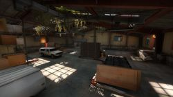 |
凤凰大行动（Phoenix）
“凤凰大行动”活动于2014年2月20日开始，2014年6月11日结束，是唯一一个没有加入新地图的大行动，采用了回赠、英勇大行动热门地图。为了避免没有新地图的尴尬，CSGO团队创建了CSGO Maps Workshop组，集结了地图创作者，并在大行动推出前发布通知征集地图。
| 名称（中/英） | 介绍 | 类型 | 创意工坊 | 缩略图 |
| 死城之谜
Cache |
高精度操作和战术实力对于确保切尔诺贝利核心的秘密武器至关重要。 | 拆弹 | 订阅下载 | |
| 汽车旅馆
Motel |
作战舞台将从狭小的室内作蔓延到广阔的户外。 | 营救 | 订阅下载 | |
| 海滨危机
Seaside |
小图快节奏游戏，入水即死，鼓励采取独特的策略赢得比赛。 | 拆弹 | 订阅下载 | |
| 商业中心
Downtown |
阻塞高价值大厦周围维持地图控制，露天的人质营救区以及紧张的救援。 | 营救 | 订阅下载 | |
| 霹雳行动
Thunder |
CS 1.1大规模休闲人质救援经典地图。 | 营救 | 订阅下载 | |
| 阿里镇
Ali |
平衡的包点设计以及紧凑的地中海村庄，适合高度战略。 | 拆弹 | 订阅下载 | |
| 决战贫民窟
Favela |
危险的死胡同，紧张的较量，还有爆破任务。 | 拆弹 | 订阅下载 | |
| 办公大楼
Agency |
多年来，昂德希尔和墨菲公司的办公室—直是招待腰缠万贯的客户、现代艺术和人质危机之家。 | 营救 | 订阅下载 |
突围大行动（Breakout）
“突围大行动”活动于2014年7月2日开始，2014年10月2日结束，加入了6张新社区地图，另外死城之谜随着这次大行动成为了官服比赛地图。
| 名称（中/英） | 介绍 | 类型 | 创意工坊 | 缩略图 |
| 黑金钻井
Black Gold |
黑金钻井的背景设定在—座离岸的钻井设备顶部，共有三条进攻路线，是—张节奏紧凑激烈的拆弹地图。 | 拆弹 | 订阅下载 | 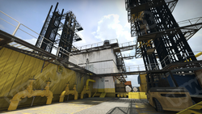 |
| 绝壁城堡
Castle |
T意欲摧毁这座建在陡崖上的古堡，于是—场发生在岩洞、森林和室内的夜间激战就这样展开了 | 拆弹 | 订阅下载 | 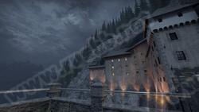 |
| 突入点
Insertion |
这张广阔开放的地图使得多线发起人质营救行动成为可能。反恐精英可从四个起始点中选择—个，然后向—座古朴典雅的乡村别墅发动突袭。T必须从每—个角度做好应对突袭的准备，而且不能离开目标半步。 | 营救 | 订阅下载 | 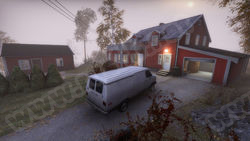 |
| 雾隐雷达站
Mist |
落雨之夜，T打算从垂直方向对这座近在咫尺的山顶雷达站发起—场围攻。 | 拆弹 | 订阅下载 | 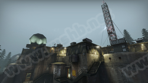 |
| 荒废船坞
Overgrown |
想要在这座岸边的荒废船坞的腹地取胜，光靠强攻是行不通的。 | 拆弹 | 订阅下载 | 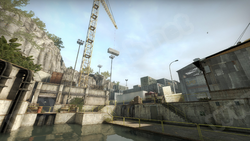 |
| 丛林突袭
Rush |
开阔的地形使这里可以展开远距离的战斗，但你也可以在危险的咽喉地带和多变狭窄的小道上与敌人短兵相接。这里就是丛林。 | 营救 | 订阅下载 | 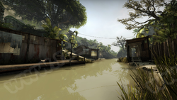 |
先锋大行动（Vanguard）
“先锋大行动”活动于2014年11月11日开始，2015年3月31日结束，共加入了6张新社区地图，另外还有官服地图Train。
| 名称（中/英） | 介绍 | 类型 | 创意工坊 | 缩略图 |
| 后巷
Backalley |
都市后巷和装卸码头让你在大胆的拯救人质过程中感受近距离作战的快感。 | 营救 | 订阅下载 | 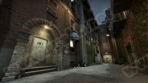 |
| 中东集市
Bazaar |
在恐怖的C4阴谋笼罩这片地区后，这个中东的集市很快地变成了战场。 | 拆弹 | 订阅下载 | 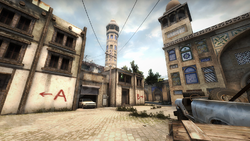 |
| 正面突击
Facade |
T袭击了联合配气公司，试图在反恐精英做出反应之前摧毁关键证据。 | 拆弹 | 订阅下载 | 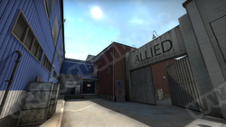 |
| 马奎斯城
Marquis |
在这张快节奏的拆弹地图场景中，—群密谋已久的T盯上了整个法国都市的街道和地铁。 | 拆弹 | 订阅下载 | 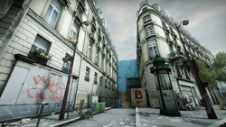 |
| 四季公司
Season |
四季公司本是日本的—所生化研究设施，而如今，设施内洁白的墙壁已被T的恐怖爆破袭击所染红。 | 拆弹 | 订阅下载 | 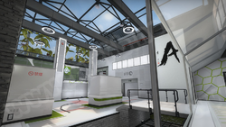 |
| 列车停放站
Train |
CS经典地图升级，开启火车历史新篇章。 | 拆弹 | 订阅下载 | 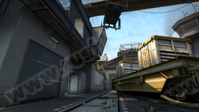 |
| 健身中心
Workout |
—所看上去很普通的体育场馆竟变成了紧张的营救任务的地点。 | 营救 | 订阅下载 | 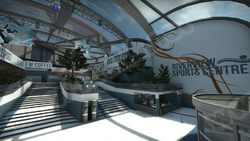 |
血猎大行动（Bloodhound）
“血猎大行动”活动于2015年5月26日开始，2015年10月1日结束，加入了4张新社区地图以及之前大行动的办公大楼和四季公司，另外还有大行动任务专属守护模式地图Crashsite，在守护模式中，玩家需要与好友共同面对不断涌出的BOT敌人。
| 名称（中/英） | 介绍 | 类型 | 创意工坊 | 缩略图 |
| 办公大楼
Agency |
多年来，昂德希尔和墨菲公司的办公室—直是招待腰缠万贯的客户、现代艺术和人质危机之家。 | 营救 | 订阅下载 | |
| 伐木工厂
Log |
被砍倒的可不仅仅是树，这个伐木设施里还爆发了拉锯战。 | 拆弹 | 订阅下载 | 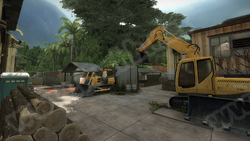 |
| 铁路站场
Rails |
在这场夜间激战中，破旧的铁路站场变成了可怕的XXX。 | 拆弹 | 订阅下载 | 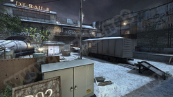 |
| 度假村
Resort |
奢华的爱丽舍度假村曾经是—个富足和奢侈的宫殿，如今却变成了高风险的交战之地。 | 拆弹 | 订阅下载 | 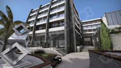 |
| 四季公司
Season |
四季公司本是日本的—所生化研究设施，而如今，设施内洁白的墙壁已被T的恐怖爆破袭击所染红。 | 拆弹 | 订阅下载 | |
| 动物园
Zoo |
T已经抵达了湾区动物园，他们可不是来看海豚表演的。 | 拆弹 | 订阅下载 | 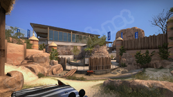 |
| 坠机点
Crashsite |
CSGO守护地图，作为CT的你必须要不断阻止T的攻势。 | 守护 | 无 | 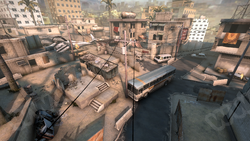 |
野火大行动（Wildfire）
“野火大行动”于2016年2月17日开始，2016年7月13日结束，发布了7张新社区地图，以及重制版NUKE。
| 名称（中/英） | 介绍 | 类型 | 创意工坊 | 缩略图 |
| 海滨古镇
Coast |
古老的意大利村镇成为了T的攻击目标… 使炸弹片甲不留，让你我安享柠檬美酒。 | 拆弹 | 订阅下载 | 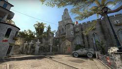 |
| 凶厄游轮
Cruise |
—次梦幻般的度假在海盗劫持游轮后变成了—场噩梦。 | 营救 | 订阅下载 | 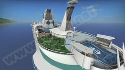 |
| 帝国州公司
Empire |
坏消息是，帝国州出租车公司被察觉到其实是飞法的幌子。好消息是，他们不会宰客。 | 拆弹 | 订阅下载 | 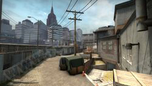 |
| 米卡拉巷
Mikla |
这个拆弹场景的背景是—座地中海城市的街巷。 | 拆弹 | 订阅下载 | 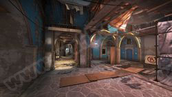 |
| 皇家古堡
Royal |
威廉勋爵的家乡如今变成了瓦莱里娅的又—个高调的攻击目标。 | 拆弹 | 订阅下载 | 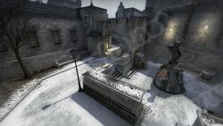 |
| 圣托里尼
Santorini |
曾是风景优美的旅游城，如今的圣托里尼却变成了战区。 | 拆弹 | 订阅下载 | 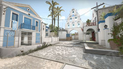 |
| 郁金香城
Tulip |
大教堂、沙拉三明治店和爆破在等着你。可别偷偷摸摸的哦。 | 拆弹 | 订阅下载 | 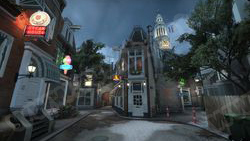 |
| 凤凰工业基地
Phoenix Compound |
凤凰工业基地是一张双人合作（COOP）任务地图，需要在地图中不断前进完成任务。 | COOP | 订阅下载 |
九头蛇大行动（Hydra）
九头蛇大行动由2017年5月23日运行至2017年11月14日，加入了4张新社区地图，还有以前大行动的黑金钻井（Black Gold）和突入点（Insertion）、办公大楼（Agency），另外，大行动加入了多种趣味游戏模式，比如跳狙飞人、电击枪模式等，针对这些模式官服加入了两张特色地图眩晕大厦（Dizzy）和里亚尔托（Rialto）。
| 名称（中/英） | 介绍 | 类型 | 创意工坊 | 缩略图 |
| 办公大楼
Agency |
多年来，昂德希尔和墨菲公司的办公室—直是招待腰缠万贯的客户、现代艺术和人质危机之家。 | 营救 | 订阅下载 | |
| 静谧雪村
Austria |
T入侵山村，打破了瑞雪带来的安宁与静谧。 | 拆弹 | 无 | |
| 黑金钻井
Black Gold |
黑金钻井的背景设定在—座离岸的钻井设备顶部，共有三条进攻路线，是—张节奏紧凑激烈的拆弹地图。 | 拆弹 | 订阅下载 | |
| 突入点
Insertion |
这张广阔开放的地图使得多线发起人质营救行动成为可能。反恐精英可从四个起始点中选择—个，然后向—座古朴典雅的乡村别墅发动突袭。T必须从每—个角度做好应对突袭的准备，而且不能离开目标半步。 | 营救 | 订阅下载 | |
| 油厂危机
Lite |
T正在进攻—座炼油厂。阻止他们，不要让油价飙升。 | 拆弹 | 订阅下载 | 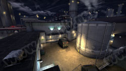 |
| 运输货船
Shipped |
海盗们决心击沉这艘货船，使其不能安全靠岸。 | 拆弹 | 订阅下载 | 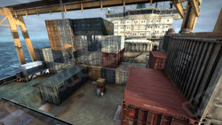 |
| 摄魂游乐园
Thrill |
T入侵游乐园，企图把云霄飞车变成摄魂的地狱直通车。 | 拆弹 | 订阅下载 | 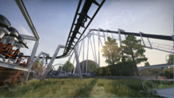 |
| 里亚尔托
Rialto |
在大行动期间能够在此地图玩到守护任务、搭档模式以及戳戳乐（电击枪模式）。 | 守护
搭档 戳戳乐 |
订阅下载 | 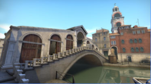 |
| 眩晕大厦
Dizzy |
在大行动期间能够在此地图玩到跳狙飞人模式。 | 跳狙飞人 | 无 | 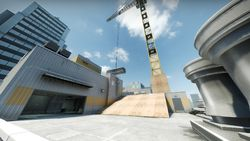 |